|
Configuring Delphi falls into three main categories:
1) Setting general Delphi options,
2) Installing the required components,
3) And setting the QuArK project options.
(Note that the examples below are from Delphi 7, but the commands and dialogs are similar for earlier versions of Delphi.)
(Note also that Delphi version 5 or greater is required.)
- Delphi options
-
There are a few Delphi options which I have found useful to set prior to doing anything.
Select Tools - Environment Options from the Delphi main menu, then go to the Preferences tab (which is probably the first one displayed anyway). Ensure that the "Show compiler progress" and "Minimize on run" options are checked (the rest can be left as default).
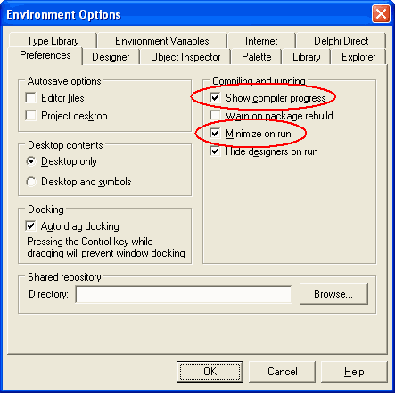
Next go to the Delphi Direct tab and unselect "Automatically poll network". This is a personal preference, and unless you want Delphi to poll the Borland web site every now and again to get news items and popup a window with them, it is a good idea to turn it off. Actually I've never read anything it does show, so maybe if you want to experiment then leave this option on.
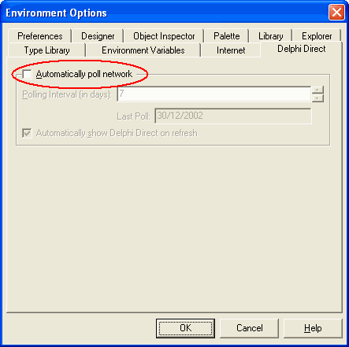
The next step complements the later step of installing the components. Even though you install the components, you still need to tell Delphi where to find the source files, and you do that in the Library tab. Click the ellipsis button next to the "Library path field".

The Directories form will appear. In the list box are the current directories in the library path. To add a new directory (you will need to add one directory for each component which has been, or will be, installed as part of the extra components which QuArK uses. Click the ellipsis button on this form next to the edit field.
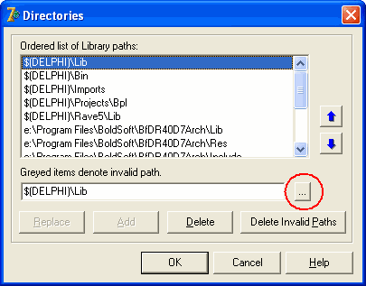
Now browse to the source\components directory and click OK.
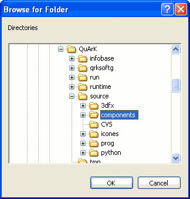
Back on the Directories form notice that the directory you selected appears in the edit field, and the Add button is enabled. click the Add button and the directory will be added to the end of the list.
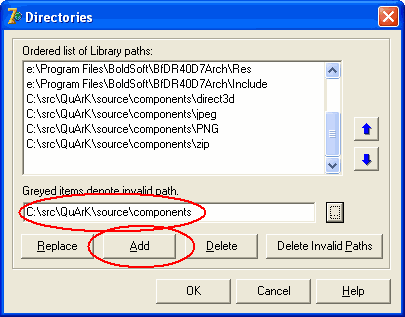
You will need to repeat the above two steps for each of the directories under the source\components directory EXCLUDING CVS (CVS is a special directory which WinCVS uses to track changes to the files). So you need to browse and add the directories: direct3d, jpeg, png and zip. After adding, your Directories window should look something like this.

Now click OK to close the Directories window, then OK to close the Environment Options window.
- Components
-
Delphi comes with a rich set of components, both visual components (those which correspond to actual things you can see on forms, such as buttons and edit fields) and non-visual components (such as timers, Internet protocol helpers and so on). The flexible QuArK interface makes use of some components which are not part of the standard Delphi component suite, they are supplied as part of the source (in the source\components directories). Installing them is a fairly painless procedure, as follows:
Run Delphi, select File - Open from the main menu, change the file type to "Delphi packages (*.dpk)", browse to the source\components directory which you checked out of the CVS repository, select the file vclar40.dpk and click Open.
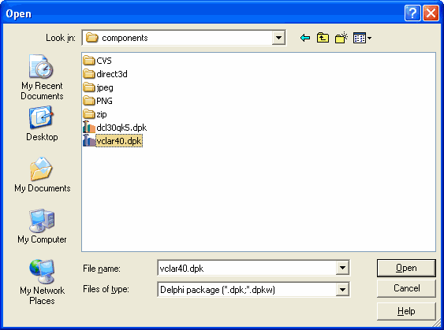
A message might be displayed warning that the resources file was missing but was re-created. If so, just click OK.
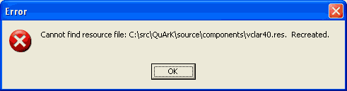
Also, if you are using Delphi 5 or later (the "40" in "vclar40.dpk" originates from Delphi 4) you might be advised that the package is in an older format, and would you like it to be converted. Again, if so, just Click Yes.
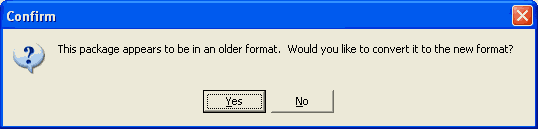
A successful conversion (I am yet to see an unsuccessful one) would be indicated by the following dialog.
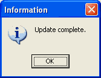
Now the Package window should be visible.
In this window click the Install button icon at the top.
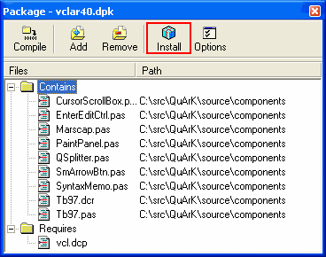
Delphi will compile the package and register the components. Successful component registration will be indicated by something like the following message.
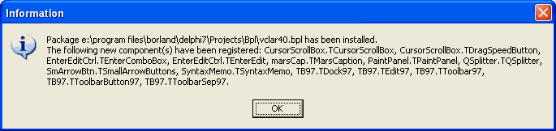
To see where the new components are, scroll the component palette all the way to the right, and you should see tabs called Toolbar97, Exemples and Mars.
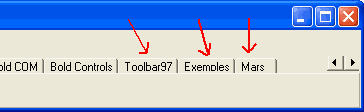
Now select File - Close All from the Delphi main menu. You will be prompted to save changes to the project vclar40.dpk - you should NOT do this, so click No. The components have already been installed into the Delphi IDE, and if you do save the vclar40.dpk project then WinCVS will register that you have changed those files. So you do not need to save changes to the vclar40.dpk project.
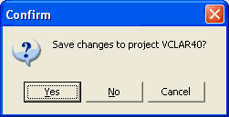
- QuArK project options
-
Before you can compile QuArK, you will almost certainly need to change some of the project options. Select File - Open, browse to the source directory, change the file type to "Delphi Project (*.dpr)" if necessary (most Delphi versions default to opening .dpr files, but Delphi 7 appears to remember the last file type you opened), select QuArK.dpr and click Open.
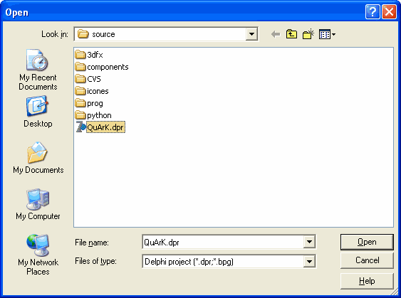
Now a quick word about the directory structure. I have a directory called c:\src in which I keep all my source files (for all projects). There is a subdirectory c:\src\QuArK in which I checkout the QuArK source. So my working directory in WinCVS is c:\src\QuArK, and WinCVS creates a bunch of directories under that, like this:
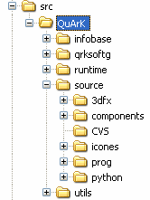
To keep the CVS source as clean as possible, I create two additional directories, one to hold a working copy of the runtime files (called "run") and one to hold temporary files, such as .dcu (Delphi compiled unit) files. I copy all of the contents of the "runtime" directory into the "run" directory EXCEPT the CVS subdirectories. CVS subdirectories tell WinCVS that the files in that directory should be checked for changes, and I do not want that to happen for the "run" and "tmp" directories, so I make sure there are no "CVS" directories under those two. WinCVS reports those directories and all their subdirectories as "NonCvs Folder" which is fine as I will never be committing anything in either of those two folders.

If you have existing programming practices, then you should keep following it rather than introducing new practices just for QuArK. For example lots of people store all temporary files in one place, such as c:\temp (under older Windows) or %TEMP% (under Windows NT/2K/XP).
In Delphi, with the QuArK project loaded, select Project - Options, and go to the Directories/Conditionals tab. Change the "Output directory" and the "Unit output directory" to be a working runtime directory (I would use c:\src\QuArK\run) and a temporary directory (I would use c:\src\QuArK\tmp) respectively. In conditional defines a little bit further down, if the word "Debug" appears, delete it. You only need this if you are doing extensive debugging of QuArK.
Instead, using the drop down arrow to the right, select "PYTHON_BUNDLED". This is because the basic Python library is now included with the QuArK runtime files in the dll folder, eliminating the need of having to install Python or the old Mini-python package that was required with older versions of QuArK.
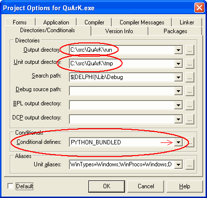
Now go to the Linker tab and unselect the "Include TD32 debug info" - once again this is not necessary if you are not doing extensive debugging of QuArK, and will drastically increase the size of the QuArK.exe which Delphi compiles if it is selected.
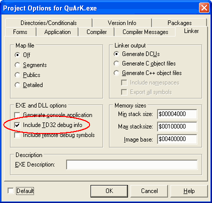
If you are using Delphi 7, there are a bunch of extra warnings which Delphi 7 produces. Most of these you do not have to see, and the compile slows to an absolute crawl if they are left on. I tried to compile with all warnings enabled, and Delphi produced over 4500 warnings, compiling about 10 lines a second, so I killed the compile, disabled the warnings, and now a full rebuild of QuArK takes about 12 seconds. Still in the Options window, go to the Warnings tab, and unselect the following warnings:
- Comparing signed and unsigned types - widened both operands
- Combining signed and unsigned types - widened both operands
- Suspicious typecast
- Unsafe type
- Unsafe code
- Unsafe typecast
Note that they do not all fit into one screen in the picture below, you will need to scroll to find all the options.
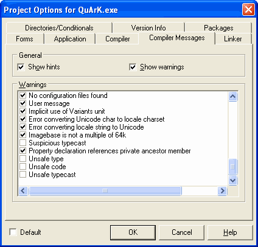
Finally click OK to save the project options, and select File - Save All to save the new project options. Note that these settings are saved in the QuArK.dof and QuArK.cfg files, and WinCVS will indicate that those files have been modified. You should NOT commit those changes (unless you have changed something else fundamental in the project options) as these changes will affect all developers, and options saved in a later version of Delphi might not work in an earlier version.
|